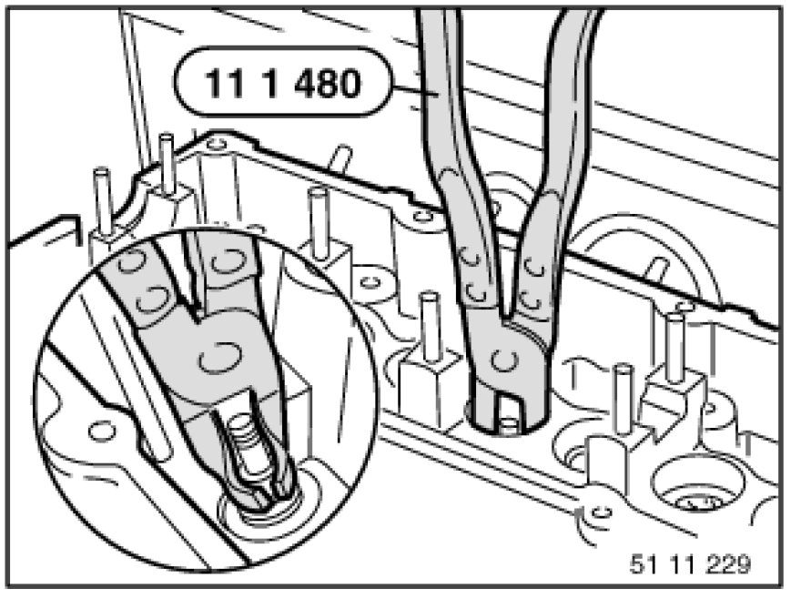
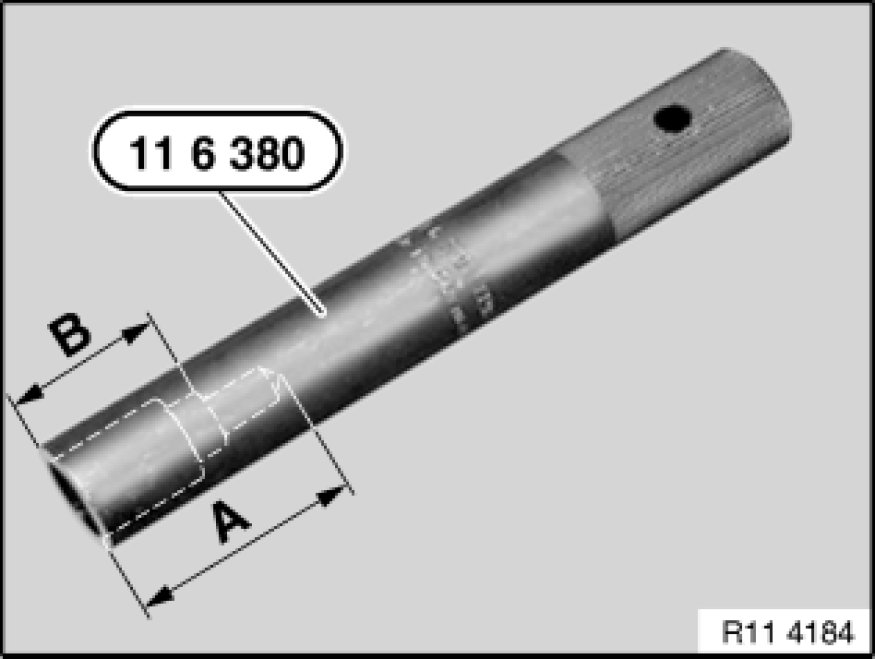
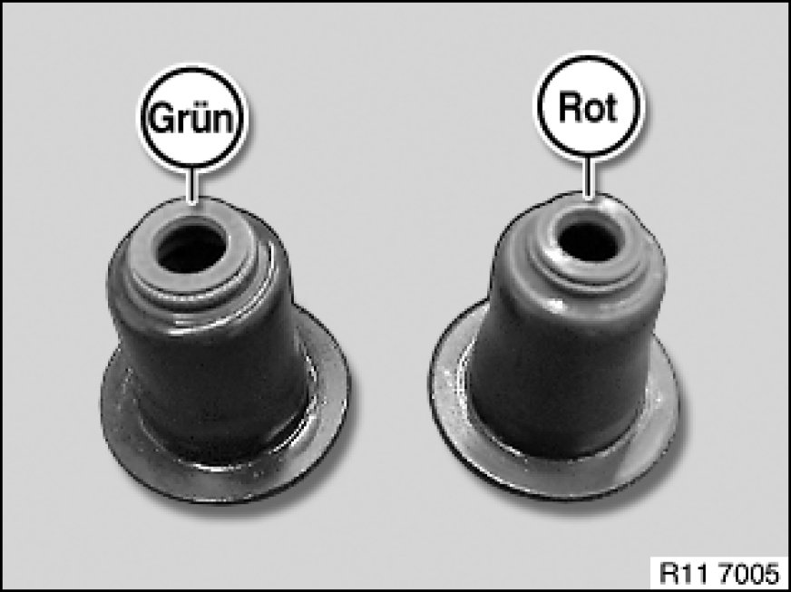
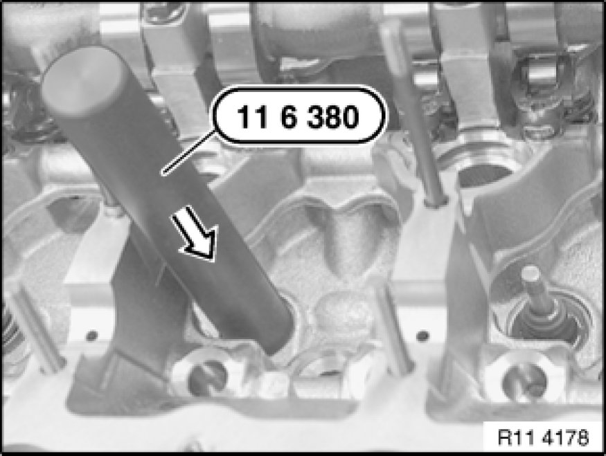

Valve Guide Seal: Service and Repair
11 34 560 - Replacing all valve stem seals (N52K)

Special tools required:
- 11 1 480
- 11 6 380 11 6 380 Bush

Necessary preliminary tasks:
- Remove cylinder head Removal and Replacement.
- Remove intermediate lever Removing and Installing/Replacing Intermediate Levers
- Remove eccentric shaft Removing and Installing/Replacing Eccentric Shaft
- Remove inlet camshaft Removing and Installing/Replacing Inlet Camshaft
- Remove exhaust camshaft Removing and Installing/Replacing Exhaust Camshaft.
- Remove cam followers Service and Repair

Firmly press special tool 11 1 480 onto old valve stem seals.
Detach valve stem seal from valve stem by turning and simultaneously pulling special tool 11 1 480.
Installation:
Insert all valves.

Note:
For use on the N52K engine, special tool 11 6 380 must be remachined according to the picture with a 10 mm dia. drill bit to a depth of B = approx. 23 mm.
This modification has already been taken into account for reordering.

Important!
Different diameters at valve stem.
All valve stem seals are colour-coded.
For 5 mm dia. valves, the valve stem seal is marked red or brown.
For 6 mm dia. valves, the valve stem seal is marked green or light green.

Installation:
Fit the mounting sleeves (plastic sleeves) contained in the delivery specification on the valve stem end.
Lubricate mounting sleeve.
Press on valve stem seal by hand with special tool 11 6 380 11 6 380 Bush as far as it will go.

Assemble engine.